컴퓨터응용선반기능사 (2013-04-14 기출문제)
1과목: 기계재료 및 요소
1. Cr 10~11%, Co 26~58%, Ni 10~16% 함유하는 철합금으로 온도변화에 대한 탄성율의 변화가 극히 적고 공기 중이나 수중에서 부식되지 않고, 스프링, 태엽, 기상관측용 기구의 부품에 사용되는 불변강은?
- 인바(invar)
- 코엘린바(coelinvar)
- 퍼멀로이(permalloy)
- 플래티나이트(platinite)
(정답률: 66%)

2. 주철의 흑연화를 촉진시키는 원소가 아닌 것은?
- Al
- Mn
- Ni
- Si
(정답률: 53%)
3. 설계도면에 SM40C로 표시된 부품이 있다. 어떤 재료를 사용해야 하는가?
- 인장강도가 40MPa 인 일반구조용 탄소강
- 인장강도가 40MPa 인 기계구조용 탄소강
- 탄소를 0.37%~0.43% 함유한 일반구조용 탄소강
- 탄소를 0.37%~0.43% 함유한 기계구조용 탄소강
(정답률: 49%)
4. 담금질한 탄소강을 뜨임 처리하면 어떤 성질이 증가되는가?
- 강도
- 경도
- 인성
- 취성
(정답률: 67%)
5. 철강 재료에 관한 올바른 설명은?
- 용광로에서 생산된 철은 강이다.
- 탄소강은 탄소함유량이 3.0%~4.3% 정도이다.
- 합금강은 탄소강에 필요한 합금 원소를 첨가한 것이다.
- 탄소강의 기계적 성질에 가장 큰 영향을 끼치는 원소는 규소(Si)이다.
(정답률: 60%)
6. 주조경질합금의 대표적인 스텔라이트의 주성분을 올바르게 나타낸 것은?
- 몰리브덴 - 바나듐 - 탄소 - 티탄
- 크롬 - 탄소 - 니켈 - 마그네슘
- 탄소 - 텅스텐 - 크롬 - 알루미늄
- 코발트 - 크롬 - 텅스텐 - 탄소
(정답률: 46%)
7. 강괴를 탈산정도에 따라 분류할 때 이에 속하지 않는 것은?
- 림드강
- 세미 림드강
- 킬드강
- 세미 킬드강
(정답률: 64%)
8. 구름베어링 중에서 볼베어링의 구성요소와 관련이 없는 것은?
- 외륜
- 내륜
- 니들
- 리테이너
(정답률: 63%)
9. 평기어에서 피치원의 지름이 132mm, 잇수가 44개인 기어의 모듈은?
- 1
- 3
- 4
- 6
(정답률: 86%)
10. 나사 및 너트의 이완을 방지하기 위하여 주로 사용되는 핀은?
- 테이퍼 핀
- 평행 핀
- 스프링 핀
- 분할 핀
(정답률: 59%)
11. [그림]에서 응력집중 현상이 일어나지 않는 것은?
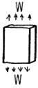
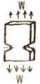
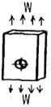
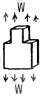
(정답률: 65%)
12. 압축코일스프링에서 코일의 평균지름(D)이 50mm, 감김수가 10회, 스프링지수가 5.0 일 때 스프링 재료의 지름은 약 몇 mm 인가?
- 5
- 10
- 15
- 20
(정답률: 65%)
13. 나사결합부에 진동하중이 작용하던가, 심한 하중변화가 있으면 어느 순간에 너트는 풀리기 쉽다. 너트의 풀림 방지법으로 사용하지 않는 것은?
- 나비 너트
- 분할 핀
- 로크 너트
- 스프링 와셔
(정답률: 58%)
14. 나사에 관한 설명으로 옳은 것은?
- 1줄 나사와 2줄 나사의 리드(lead)는 같다.
- 나사의 리드각과 비틀림각의 합은 90º 이다.
- 수나사의 바깥지름은 암나사의 안지름과 같다.
- 나사의 크기는 수나사의 골지름으로 나타낸다.
(정답률: 45%)
15. 체인 전동의 특징으로 잘못된 것은?
- 고속 회전의 전동에 적합하다.
- 내열성, 내유성, 내습성이 있다.
- 큰 동력 전달이 가능하고 전동 효율이 높다.
- 미끄럼이 없고 정확한 속도비를 얻을 수 있다.
(정답률: 45%)
2과목: 기계제도(절삭부분)
16. 제 3각법으로 투상된 그림과 같은 투상도에서 평면도로 가장 적합한 것은?
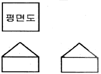
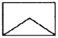
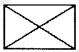
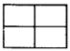
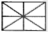
(정답률: 84%)
17. 그림과 같이 물체의 구멍, 홈 등 특정 부위만의 모양을 도시하는 투상도의 명칭은?
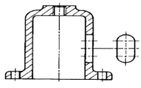
- 보조 투상도
- 국부 투상도
- 전개 투상도
- 회전 투상도
(정답률: 89%)
18. 표면거칠기 지시방법에서 '제거가공을 허용하지 않는다'는 것을 지시하는 것은?
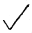
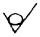
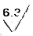
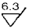
(정답률: 84%)
19. 기계제도 도면에 사용되는 가는 실선의 용도로 틀린 것은?
- 치수보조선
- 치수선
- 지시선
- 피치선
(정답률: 67%)
20. 그림과 같은 암나사 관련부분의 도시 기호의 설명으로 틀린 것은?
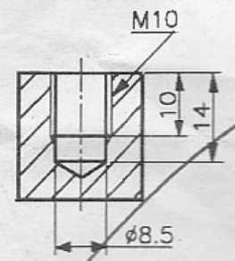
- 드릴의 지름은 8.5 mm
- 암나사의 안지름은 10 mm
- 드릴 구멍의 깊이는 14 mm
- 유효 나사부의 길이는 10mm
(정답률: 60%)
21. 기계제도에서 최대 실체공차 방식의 기호는?
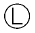
(정답률: 73%)
22. 상용하는 공차역에서 위 치수허용차와 아래 치수허용차의 절대값이 같은 것은?
- H
- js
- h
- E
(정답률: 47%)
23. 베어링 호칭번호 '6308 Z NR'로 되어 잇을 때 각각의 기호 및 번호에 대한 설명으로 틀린 것은?
- 63 : 베어링 계열 기호
- 08 : 베어링 안지름 번호
- Z : 레이디얼 내부 틈새 기호
- NR : 궤도륜 모양 기호
(정답률: 61%)
24. 치수숫자와 함께 사용되는 기호로 45º 모떼기를 나타내는 기호는?
- C
- R
- K
- M
(정답률: 84%)
25. 지시선의 화살표로 나타낸 중심면은 데이텀 중심평면 A에 대칭으로 0.08mm의 간격을 갖는 평행한 두개의 평면사이에 있어야 한다고 할 때 들어가야 할 기하공차 기호로 옳은 것은?
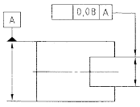
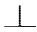
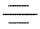
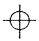
(정답률: 57%)
26. 피측정물을 양 센터에 지지하고, 360º 회전시켜 다이얼 게이지의 ?값과 최소값의 차이로서 진원도를 측정하는 것은?
- 직경법
- 반경법
- 3점법
- 센터법
(정답률: 47%)
27. 다음과 같은 숫돌바퀴의 표시에서 숫돌입자의 종류를 표시한 것은?
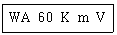
- 60
- m
- WA
- V
(정답률: 76%)
28. 자동 모방장치를 이용하여 모형이나 형판을 따라 절삭하는 선반은?
- 모방선반
- 공구선반
- 정면선반
- 터릿선반
(정답률: 82%)
29. 절삭 저항을 변화시키는 요소에 대한 설명으로 올바른 것을 <보기>에서 모두 고른 것은?
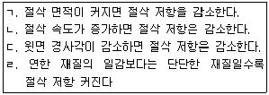
- ㄱ, ㄷ
- ㄴ, ㄹ
- ㄱ, ㄴ, ㄷ
- ㄴ, ㄷ, ㄹ
(정답률: 55%)
30. 밀링 작업에서 하향 절삭과 비교한 상향 절삭의 특징으로 올바른 것은?
- 절삭력이 상향으로 작용하여 고정이 불리하다.
- 가공할 때 충격이 있어 높은 강성이 필요하다.
- 절삭날의 마멸이 적고 공구수명이 길다.
- 백래시를 제거하여야 한다.
(정답률: 51%)
3과목: 기계공작법
31. 호닝(honing)에서 교차각(s) 몇 도 일 때 다듬질량이 가장 큰가?
- 10~ 15
- 23~ 35
- 40~ 50
- 55~ 65
(정답률: 51%)
32. 기어 가공시 잇수 분할에 사용되는 밀링 부속장치는?
- 수직축 장치
- 분할대
- 회전 테이블
- 래크 절삭장치
(정답률: 67%)
33. 주로 일감의 평면을 가공하며, 기둥의 수에 따라 쌍주식과 단주식으로 구분하는 공작 기계는?
- 셰이퍼
- 슬로터
- 플레이너
- 브로칭 머신
(정답률: 56%)
34. 다음 중 공작물에 암나사를 가공하는 작업은?
- 보링 작업
- 탭 작업
- 리머 작업
- 다이스 작업
(정답률: 67%)
35. 회전하는 원형 테이블에 작은 공작물을 여러 개 올려놓음과 동시에 연삭할 때 주로 사용하는 평면 연삭 방식은?
- 수평 평면 연삭
- 수직 평면 연삭
- 플런지 컷형
- 회전 테이블 연삭
(정답률: 60%)
36. 절삭 공구의 구비 조건으로 틀린 것은?
- 충격에 견딜 수 있는 강인성이 있을 것
- 고온에서도 경도가 감소하지 않을 것
- 인장강도와 내마모성이 작을 것
- 쉽게 원하는 모양으로 제작이 가능할 것
(정답률: 77%)
37. 다음 끼워맞춤에서 요철틈새 0.1mm를 측정할 경우 가장 적당한 것은?
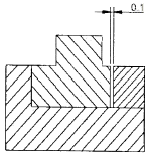
- 내경 마이크로미터
- 다이얼게이지
- 버니어 캘리퍼스
- 틈새게이지
(정답률: 76%)
38. 절삭 유제의 특징에 해당하지 않는 것은?
- 공구수명을 감소시키고, 절삭성능을 높여준다.
- 공구와 칩 사이의 마찰을 감소시킨다.
- 절삭열을 냉각시킨다.
- 칩을 씻어주고 절삭부를 깨끗이 닦아 절삭작용을 한다.
(정답률: 75%)
39. 일반적으로 밀링머신에서 사용하는 테이블 이송과 커터 회전 당 이송으로 가장 적합한 것은?
- mm/min, mm/rev
- mm/min, mm/stroke
- mm/min, mm/sec
- mm/sec, mm/stroke
(정답률: 79%)
40. 공작기계가 갖춰야할 구비조건으로 틀린 것은?
- 높은 정밀도를 가질 것
- 가공능력이 클 것
- 내구력이 작을 것
- 기계효율이 좋을 것
(정답률: 86%)
4과목: CNC공작법 및 안전관리
41. 일반적으로 구성인선 방지대책으로 적절하지 않은 방법은?
- 절삭 깊이를 깊게 할 것
- 경사각을 크게 할 것
- 윤활성이 좋은 절삭 유제를 사용할 것
- 절삭속도를 크게 할 것
(정답률: 70%)
42. 선반 가공에서 가늘고 긴 가공물을 절삭할 때 사용하는 부속 장치는?
- 돌리개
- 방진구
- 콜릿 척
- 돌림판
(정답률: 79%)
43. 컴퓨터에 의한 통합 생산 시스템으로 설계, 제조, 생산, 관리 등을 통합하여 운영하는 시스템은?
- CAM
- FMS
- DNC
- CIMS
(정답률: 42%)
44. CNC선반에서 지령값 X를 Φ50mm로 가공한 후 측정한 결과 Φ49.97mm 이었다. 기존의 X축 보정 값이 0.0⑤ 이라면 보정값을 얼마로 수정해야 하는가?
- 0.035
- 0.135
- 0.025
- 0.125
(정답률: 66%)
45. CAD/CAM 시스템에서 입력장치에 해당되는 것은?
- 프린터
- 플로터
- 모니터
- 스캐너
(정답률: 54%)
46. CNC선반에서 점B에서 점C까지 가공하는 프로그램을 올바르게 작성한 것은?
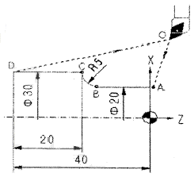
- GO2 U10. W-5. R5. ;
- GO2 X10. Z-5. R5. ;
- GO3 U10. W-5. R5. ;
- GO3 X10. Z-5. R5. ;
(정답률: 50%)
47. 선반 작업의 안전 사항에 대한 내용 중 틀린 것은?
- 작업 중 칩의 처리는 기계를 멈추고 한다.
- 절삭공구는 될 수 있으면 길게 설치한다.
- 면장갑을 끼고 작업해서는 안 된다.
- 회전 중 속도를 변경할 때는 주축이 정지한 다음 변경한다.
(정답률: 84%)
48. 선반작업에서 공작물의 가공 길이가 240mm이고, 공작물의 회전수가 1200 rpm, 이송속도가 0.2 mm/rev일 때 1회 가공에 필요한 시간은 몇 분(min)인가?
- 0.2
- 0.5
- 1.0
- 2.0
(정답률: 48%)
49. CNC 공작기계에 대한 기계좌표계의 설명으로 올바른 것은?
- 자동 실행 중 블록의 나머지 이동거리를 표시해 준다.
- 일시적으로 좌표를 0(zero)으로 설정할 때 사용한다.
- 전원 투입 후 기계 원점 복귀시 이루어진다.
- 프로그램 작성자가 임의로 정할 수 있다.
(정답률: 56%)
50. 서보기구 중 가장 널리 사용되는 다음과 같은 제어 방식은?
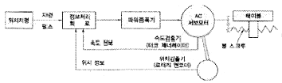
- 반폐쇄회로 방식
- 하이브리드 서보 방식
- 개방회로 방식
- 폐쇄회로 방식
(정답률: 67%)
51. CNC공작기계가 가지고 있는 M(보조기능)기능이 아닌 것은?
- 스핀들 정, 역회전 기능
- 절삭유 on, off 기능
- 절삭속도 선택기능
- 프로그램의 선택적 정지기능
(정답률: 71%)
52. CNC선반작업 중 측정기 및 공구를 사용할 때 안전사항이 틀린 것은?
- 공구는 항상 기계 위에 올려놓고 정리정돈하며 사용한다.
- 측정기는 서로 겹쳐 놓지 않는다.
- 측정 전 측정기가 맞는지 0점 셋팅(setting)한다.
- 측정을 할 때는 반드시 기계를 정지한다.
(정답률: 82%)
53. CNC선반에서 G71로 황삭가공한 후 정삭가공하려면 G코드는 무엇을 사용해야 하는가?
- G70
- G72
- G74
- G76
(정답률: 53%)
54. 다음은 머시닝센터에서 프로그램에 의한 보정량 입력을 나타낸 것이다. 설명으로 올바른 것은?
- P : 보정번호 R : 공구번호
- P : 보정번호 R : 보정량
- P : 공구번호 R : 보정번호
- P : 보정량 R : 보정취소
(정답률: 56%)
55. CNC선반 프로그램에서 주축회전수(rpm) 일정제어 G 코드는?
- G96
- G97
- G98
- G99
(정답률: 56%)
56. 다음과 같은 CNC선반의 평행 나사절삭 프로그램에서 F2.0의 설명으로 맞는 것은?
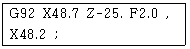
- 나사의 높이 2mm
- 나사의 리드 2mm
- 나사의 피치 2mm
- 나사의 줄 수 2줄
(정답률: 65%)
57. 인서트의 크기는 절삭이 가능한 범위 내에서 최소의 크기로 하는데 최대 절삭깊이는 인선길이의 얼마 정도로 유지하는 것이 좋은가?
- 1/2
- 1/3
- 1/4
- 1/5
(정답률: 48%)
58. 다음 중 CNC선반에서 증분지령(incremental)으로만 프로그래밍한 것은?
- GO1 X20. Z-20. ;
- GO1 U20. W-20. ;
- GO1 X20. W-20. ;
- GO1 U20. Z-20. ;
(정답률: 72%)
59. CNC공작기계 작동 중 이상이 생겼을 때 취할 행동과 거리가 먼 것은?
- 프로그램에 문제가 없는가 점검한다.
- 비상정지 버튼을 누른다.
- 주변상태(온도, 습도, 먼지, 노이즈)를 점검한다.
- 일단 파라미터를 지운다.
(정답률: 76%)
60. CNC선반의 준비기능은 한번 지령 후 계속 유효한 기능과 1회 유효한 기능으로 나누어진다. 다음 중 계속 유효한 모달(Modal) G코드는?
- G01
- G04
- G28
- G30
(정답률: 43%)